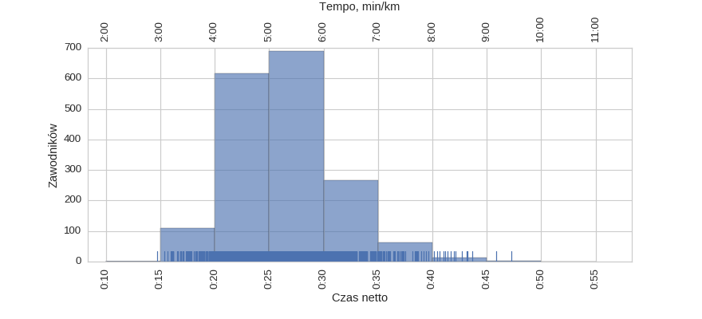

Bieg na Piątkę (37 PZU Maraton Warszawski) (2015)
Histogramy
Klasyfikacja generalna
|
mean |
std |
min |
25% |
50% |
75% |
max |
| czas |
0:28:19 |
0:04:51 |
0:14:41 |
0:24:56 |
0:28:22 |
0:31:21 |
0:52:10 |
kobiety
|
mean |
std |
min |
25% |
50% |
75% |
max |
| czas |
0:30:24 |
0:04:13 |
0:16:01 |
0:27:43 |
0:30:12 |
0:32:49 |
0:52:10 |
mężczyźni

|
mean |
std |
min |
25% |
50% |
75% |
max |
| czas |
0:26:21 |
0:04:35 |
0:14:41 |
0:23:13 |
0:25:57 |
0:29:15 |
0:47:14 |
Wykresy rybkowe
wg płci
|
czas |
count |
|
mean |
std |
min |
25% |
50% |
75% |
max |
|
| plec |
|
|
|
|
|
|
|
|
| K |
0:30:24 |
0:04:13 |
0:16:01 |
0:27:43 |
0:30:12 |
0:32:49 |
0:52:10 |
1666 |
| M |
0:26:21 |
0:04:35 |
0:14:41 |
0:23:13 |
0:25:57 |
0:29:15 |
0:47:14 |
1761 |
wg imion
|
czas |
count |
|
mean |
std |
min |
25% |
50% |
75% |
max |
|
| imie |
|
|
|
|
|
|
|
|
| Agnieszka |
0:30:34 |
0:03:47 |
0:19:59 |
0:27:55 |
0:30:31 |
0:33:12 |
0:40:05 |
118 |
| Anna |
0:30:44 |
0:04:04 |
0:17:52 |
0:28:13 |
0:30:31 |
0:33:36 |
0:42:12 |
130 |
| Joanna |
0:30:18 |
0:04:21 |
0:19:13 |
0:28:03 |
0:29:44 |
0:32:09 |
0:40:09 |
73 |
| Katarzyna |
0:30:08 |
0:03:57 |
0:18:55 |
0:27:37 |
0:30:10 |
0:32:16 |
0:41:24 |
110 |
| Krzysztof |
0:26:36 |
0:04:30 |
0:15:22 |
0:22:46 |
0:27:00 |
0:29:38 |
0:43:09 |
85 |
| Magdalena |
0:30:05 |
0:03:55 |
0:19:41 |
0:27:49 |
0:29:50 |
0:32:19 |
0:39:13 |
64 |
| Marcin |
0:25:24 |
0:04:27 |
0:17:03 |
0:22:10 |
0:25:14 |
0:27:42 |
0:42:08 |
89 |
| Marek |
0:26:55 |
0:04:42 |
0:15:38 |
0:24:06 |
0:26:11 |
0:29:32 |
0:41:26 |
52 |
| Marta |
0:30:16 |
0:03:35 |
0:24:01 |
0:27:34 |
0:29:41 |
0:31:31 |
0:40:03 |
70 |
| Małgorzata |
0:30:50 |
0:03:45 |
0:22:46 |
0:28:01 |
0:30:07 |
0:33:38 |
0:39:30 |
64 |
| Michał |
0:26:58 |
0:04:32 |
0:16:12 |
0:23:42 |
0:26:32 |
0:30:14 |
0:36:53 |
93 |
| Monika |
0:30:24 |
0:03:35 |
0:23:07 |
0:28:08 |
0:30:00 |
0:32:40 |
0:40:17 |
76 |
| Paweł |
0:26:22 |
0:04:15 |
0:16:04 |
0:23:13 |
0:25:54 |
0:29:16 |
0:40:28 |
99 |
| Piotr |
0:26:48 |
0:04:42 |
0:16:37 |
0:23:38 |
0:26:52 |
0:29:29 |
0:37:00 |
92 |
| Tomasz |
0:25:35 |
0:04:19 |
0:17:25 |
0:23:19 |
0:24:56 |
0:28:40 |
0:38:23 |
97 |
| Wojciech |
0:26:48 |
0:05:06 |
0:17:36 |
0:23:54 |
0:26:04 |
0:28:42 |
0:47:14 |
50 |
| Łukasz |
0:24:36 |
0:04:22 |
0:14:41 |
0:21:17 |
0:24:31 |
0:27:14 |
0:36:29 |
67 |
wg teamów
|
czas |
count |
|
mean |
std |
min |
25% |
50% |
75% |
max |
|
| team |
|
|
|
|
|
|
|
|
| PZU Sport Team |
0:26:48 |
0:03:55 |
0:19:10 |
0:23:22 |
0:27:04 |
0:29:41 |
0:35:07 |
42 |
| Rozbiegany Sulejówek |
0:27:50 |
0:04:52 |
0:21:47 |
0:24:22 |
0:27:04 |
0:30:20 |
0:38:26 |
15 |
| SENS |
0:31:54 |
0:04:16 |
0:24:51 |
0:29:08 |
0:30:39 |
0:34:36 |
0:39:16 |
19 |
| adidas #boostwarsaw |
0:28:05 |
0:04:26 |
0:20:14 |
0:24:35 |
0:29:13 |
0:30:32 |
0:34:56 |
10 |
wg miejscowości
|
czas |
count |
|
mean |
std |
min |
25% |
50% |
75% |
max |
|
| miejscowosc |
|
|
|
|
|
|
|
|
| Piaseczno |
0:27:40 |
0:04:33 |
0:15:22 |
0:25:17 |
0:27:49 |
0:29:31 |
0:39:59 |
46 |
| Warszawa |
0:28:39 |
0:04:40 |
0:14:41 |
0:25:17 |
0:28:44 |
0:31:33 |
0:50:55 |
2088 |